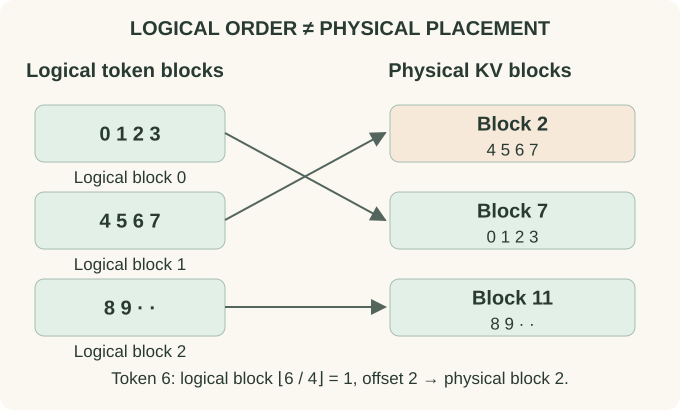

PagedAttention: Manage the Cache Without Moving the Sequence
-
01 Partition a logical historyBlock size 4; ten stored tokens0 1 2 3 4 5 6 7 8 9 · ·
The first two blocks are full. Only the final block contains unused token slots.
-
02 Translate through a tableLogical block 0 Physical 7Logical block 1 Physical 2Logical block 2 Physical 11
Logical neighbors do not need neighboring physical allocations. Attention must use the table to find each block.
-
03 Look up token 6Logical block ⌊6 / 4⌋ = 1Offset 6 mod 4 = 2Address Physical block 2, slot 2
Paging changes allocation and sharing. It does not change which logical positions the attention mask permits.
Read the picture first, then follow the derivation below.
Why a large contiguous reservation wastes space
Requests arrive with different prompt lengths and unknown future output lengths. Reserving the maximum possible cache for each request wastes unused capacity. Growing contiguous allocations can require moving data or finding large free regions, even when enough total memory is available in fragmented pieces.
Partition the token history into fixed-capacity blocks of $b$ token positions. A block table maps each request's logical block number to a physical cache block. The attention kernel follows this mapping when reading historical keys and values. The PagedAttention paper develops this serving approach.
Map a ten-token sequence into pages
With four token slots per block, a ten-token request needs three blocks. Suppose its block table is [7,2,11]. Logical positions 0–3 live in physical block 7, positions 4–7 in block 2, and positions 8–9 in block 11.
Token 6 therefore uses logical block 1, physical block 2, offset 2. The attention score still treats it as token position 6. Memory addresses and positional encodings are separate concepts.

{kind=link}
Quantify the remaining internal fragmentation
A request of length $n$ occupies $b\lceil n/b\rceil$ slots. Wasted capacity is that quantity minus $n$, between zero and $b-1$. In our example, twelve allocated slots hold ten tokens, leaving two unused.
Smaller blocks reduce tail waste and make fine-grained sharing easier, but enlarge metadata and can increase address-translation or scheduling overhead. Larger blocks provide simpler access and less metadata but coarser allocation. The best block size depends on kernel layout and workload, not only this slot-count formula.
Shared prefixes can share physical storage
If two requests have exactly the same valid prefix computation, their block tables can initially reference the same physical prefix blocks. Reference counts track how many requests use each block. Once all references disappear, the memory can return to the allocator.
A partial final block needs care. If requests branch into different continuations, writing different new tokens into one shared block would corrupt another request's view. Copy-on-write creates a private block when a shared writable region must diverge. A fully immutable prefix block can remain shared.
Reuse requires the same model state, tokens, positions, and attention context; matching visible strings alone is insufficient. The KV-cache chapter states those correctness conditions.
The kernel must understand the mapping
A generic dense attention kernel that expects one contiguous K/V tensor cannot automatically use arbitrary physical blocks. The serving implementation needs an attention kernel that translates the logical sequence into the relevant physical reads, or a gather operation that materializes a temporary view. The latter can add overhead and undermine the benefit.
Page tables describe storage; masks describe allowed attention edges. Paging alone does not remove old tokens from the attention computation, change the softmax distribution, or make the history read constant in length.
Why memory utilization affects throughput
Better cache allocation can admit more simultaneous requests within the same memory budget. More concurrency may improve throughput by batching work, but it can also change individual request latency. A serving benchmark should distinguish tokens per second across the server from latency experienced by one request.
Continuous batching lets the active set change as requests complete or arrive. Paging is compatible with that scheduling policy but is not identical to it. Likewise, prefix caching, speculative decoding, and cache quantization are separate techniques with their own correctness and resource considerations.
Useful allocator invariants
Every live logical block must refer to valid physical storage. A writable block must be exclusively owned or copied before mutation. Sequence lengths must prevent reading uninitialized tail slots. Releasing one request must not free a block still referenced by another. These invariants matter as much as correct attention arithmetic in a serving system.
Try it: Does moving a cache block to another physical address require changing its RoPE positions?
No. Logical token positions stay the same. The block table changes where the kernel finds the data; it does not change the sequence locations that produced those keys.
Distribute the computation
Ring Attention addresses a different problem: moving K/V chunks across devices so they can contribute to distributed attention.